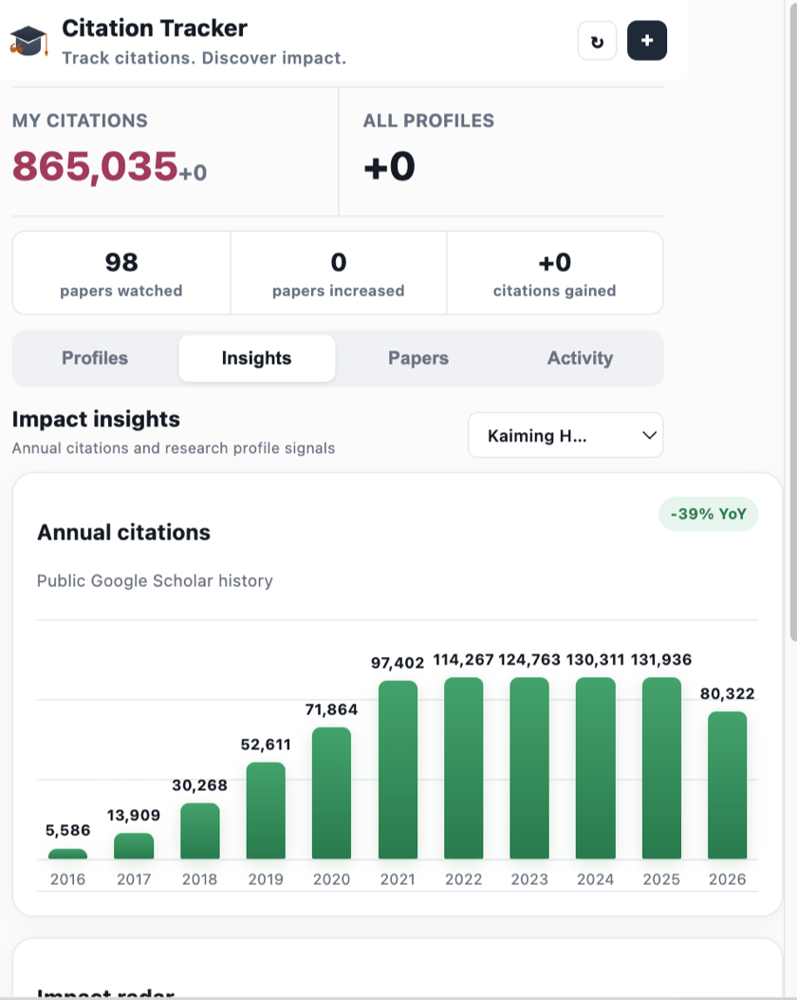

01
添加 Scholar 主页
输入用户 ID，同时追踪自己与关注的研究者。
02
自动建立论文基线
首次同步保存论文快照，后续刷新精准比较变化。
03
查看新增引用
新增数量、对应论文和发生时间，都在活动列表中。
追踪引用，发现影响力
自动追踪 Google Scholar 引用变化，可视化年度趋势与影响力，并准确找出新增引用的论文。
免费、开源 · 数据仅保存在你的浏览器中

每 30 分钟自动更新引用数据，无需手动查看。
自动读取 Scholar 年度数据，用清晰柱状图呈现长期增长和同比变化。
综合引用、指数、论文覆盖与增长动量，快速理解研究影响力结构。
准确识别哪篇论文新增了引用，以及本次增加数量。
同时追踪自己和他人主页，一个弹窗全掌握。
浏览论文与引用数，筛选本地快照，并可一键打开 Scholar 在线检索。
不再反复打开 Scholar，也不用自己记录数字。Citation Tracker 把变化整理成清晰的时间线。
输入用户 ID，同时追踪自己与关注的研究者。
首次同步保存论文快照，后续刷新精准比较变化。
新增数量、对应论文和发生时间，都在活动列表中。
无需账号、没有分析脚本、没有云端数据库。主页 ID、论文快照与引用历史全部保存在 Chrome 本地存储中。
不到一分钟，让引用变化自动来找你。
从 Scholar 主页 URL 中获取你的 ID：
scholar.google.com/citations?user=DhtAFkwAAAAJ&hl=en
chrome://extensionschrome 目录不会。扩展仅请求公开的 Google Scholar 引用数据，不读取账号信息、邮件或浏览历史。
第一次刷新用于建立论文基线。从第二次成功刷新开始，扩展才会比较并记录新增引用。
可以。你可以添加多个 Scholar 用户 ID，并按主页筛选论文与引用活动。
当前版本专注于本地追踪和浏览，暂未提供导出功能。你可以在 GitHub 提交功能建议。
安装 Citation Tracker，把重复检查交给浏览器。
安装 Chrome 扩展